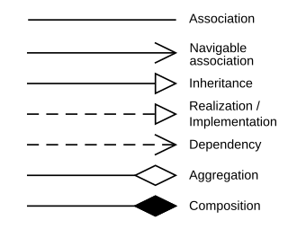

Class diagram
Mis on class diagram?
Tarkvaratehnikas on Unified Modeling Language (UML) klassiskeem teatud tüüpi staatiline
struktuuriskeem , mis kirjeldab süsteemi struktuuri , näidates süsteemi klasse ,
nende atribuute, toiminguid (või meetodeid) ja objektide vahelisi seoseid.
Kus kasutatakse class diagramme?
Seda kasutatakse rakenduse struktuuri üldiseks kontseptuaalseks modelleerimiseks ja
üksikasjalikuks modelleerimiseks, mudelite tõlkimiseks programmeerimiskoodiks .
Andmete modelleerimiseks saab kasutada ka klassiskeeme .
Seoste tähised

Nähtavus
Klassi liikme (st mis tahes atribuudi või meetodi) nähtavuse täpsustamiseks tuleb need
märgid panna liikmete nime ette:
- + Avalik
- - Privaatne
- # Kaitstud
- ~ pakett
Viited infoallikatele